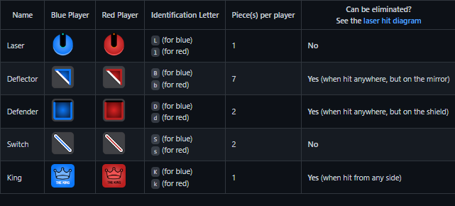

-
Introduction :
A game of capture has never been this much fun! Laser Chess combines the fun of bending lasers and illuminating pieces with chess-like strategy. You have to strike your opponent’s King while protecting your own from getting zapped! Simple rules and only a few basic moves make Laser Chess easy to learn and quick to play
-
Objective :
Be the first player to strike your opponent's King with a Laser.
-
- Red Player
- Blue Player
No of Players :
-
Pieces :
(Each player have 13 pieces)
-
Laser
Each player has one Laser that remains in the corner of the game board throughtout the game. The laser is not a playing piece and cannot be elliminated from play.
-
Deflector
The mirrored side of the Deflector reflects the laser 90 degrees. A Deflector is eliminated from play when any of it's non-mirrored surfaces are hit by the laser.
-
Defender
The front side of a Defender blocks the laser and the Defender will remain in play if hit from the front. A Defender is eliminated from play only if the laser strikes either of its sides or its back.
-
Switch
Both sides of the Switch reflect the laser 90 degrees. The Switch can also swap places with an adjacent Deflector or Defender (see Special Move section of Movement Rules). A switch can never be eliminated from play.
-
King
The King is the most important piece for each side. If hit with a laser, it is destroyed and its owner loses the game. Similar to a king in chess, the King pieces are comparatively weak, and so are often not moved unless under duress. All sides of the King are strikeable.

-
-
- The Blue player goes first. Players take turns with each player moving only their own pieces. All playing pieces, including Kings can be moved (see Movement Rules). Note that Laser's are not movable pieces.
- On a turn, a player must first take one of the following actions: A) Move any one piece one space in any direction (including diagonally) following the Movement Rules. B) Rotate a piece 90 degrees in either direction without the moving spaces. C) Rotate his or her own Laser to point in the direction of wither first column or first row. Rotation of the Laser must always be done before it is fired at the end of a turn.
- To complete a turn, the player must activate his or her own laser. Pieces are removed from the board based on where the beam lands. Refer to Pieces for a description of when and how a piece is eliminated from play. If the laser beam lands on a player's own piece, the piece is still eliminated from play.
- Red pieces can never move into spaces with blue reserved patterns and Blue pieces can never move into squares containing red reserved patterns. (Located along the edges of the board)
How to Play :
!! IMPORTANT !!
The laser is fired only one time at the end of a player's turn and the turn is over whether or not the laser hits a piece. A laser cannot be fired as a "test" mid-turn while a player is still deciding on a move to make. Once a move is made the move cannot be taken back and the Laser must be fired
-
Winning Game :
When either laser beam lands on a King piece, that King is removed and the game is over. If you are the player whose King remains–YOU WIN! If you accidentally hit your own King–LOSE! . Your opponent wins the game.
-
- Piece may only be moved OR rotated in one turn, not both.
- A piece may only be rotated 90 degrees at a time.
- piece is captured when the laser hits a piece in one of it's non-deflective / non-shield side.
Movement Rules :
-
Special Move :
-
The special move is made only by a Switch piece. The Switch may swap places with an adjacent Deflector
or Defender of either color. Neither piece rotates during the swap. A Switch cannot swap places with a
King or another Switch piece.
-
Actions :
- Kill: Stop the laser beam and capture the piece.
- Nothing: Stop the laser beam and do nothing (happens when the laser beam hits any other (or self) laser piece or the shield side of the Defender piece)
- Top: Deflect the laser beam to the top.
- Left: Deflect the laser beam to the left.
- Right: Deflect the laser beam to the right.
- Bottom: Deflect the laser beam to the bottom.